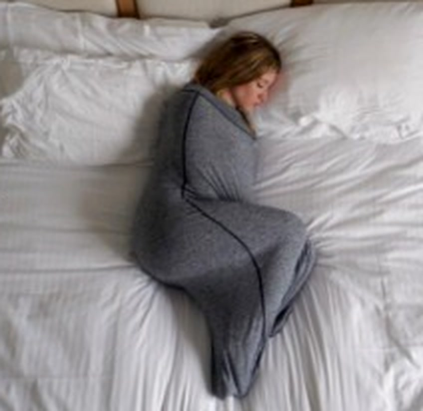

Tuckwell Cocoon
One stretchy piece of fabric that wraps you from shoulders to toes. It feels like a hug that stays all night. No sheet to tuck, no blanket to chase across the bed. You get in, lie down and stay wrapped.
30-day money-back guarantee. Not for you? Full refund, and you keep it.
Description
Key Features
- One-piece full-body wrap, your head stays out
- Stretches with you when you turn or curl up
- Nothing to tuck in and nothing to slide off the bed
- Four sizes before stretching: adult 71 x 20 in and 67 x 16 in, children's 59 x 16 in and 55 x 14 in
- Fabric: offen: Material und Anteile
- Care: offen: Waschanleitung
- Opening: offen: Reißverschluss oder zum Hineinsteigen
Specifications
Specifications
- Adult sizes: 71 x 20 in (180 x 50 cm) and 67 x 16 in (170 x 40 cm), unstretched
- Children's sizes: 59 x 16 in (150 x 40 cm) and 55 x 14 in (140 x 35 cm), unstretched
- Recommended height per size: offen: Körpergröße je Größe
- Color: Gray offen: weitere Farben
- Weight: offen: Gewicht
- Children's sizes: from age offen: Mindestalter Kindergrößen, for children who can get in and out on their own. Not for babies or toddlers
4 reasons to pick it over a blanket
- It feels calming to lie in: snug and cozy all the way around.
- It stays where you put it. You are inside it, so it cannot end up on the floor.
- It feels like being tucked in, every single night, with nobody doing the tucking.
- It works on any bed, on the couch, or on top of your usual bedding.
Try it for 30 days. If it is not for you, email us and you get a full refund. You keep the Cocoon.
Read 6 answers before you order
What does it feel like?
Snug, cozy and calming to lie in, like a hug that stays all night. How it feels is personal, so you get 30 days to find out.
Which size should I pick?
We have two adult and two children's sizes. offen: Körpergröße je Größe
Is it for children?
Yes, there are two children's sizes, for children from age offen: Mindestalter Kindergrößen who can get in and out on their own. It is not for babies or toddlers.
Is it a medical product?
No. It is made for comfort. It does not treat any condition.
Do I have to send it back if I don't like it?
No. Email us within 30 days of delivery and you get a full refund. You keep it.
How long does it take to arrive?
Your order ships within offen: Tage bis Versand, beim Bett 3 bis 4 days and usually arrives 7 to 12 business days later. You get a tracking number by email.